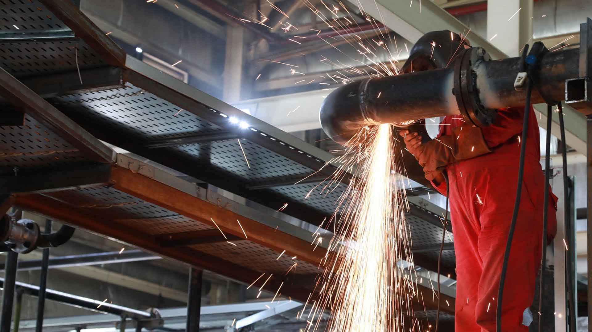
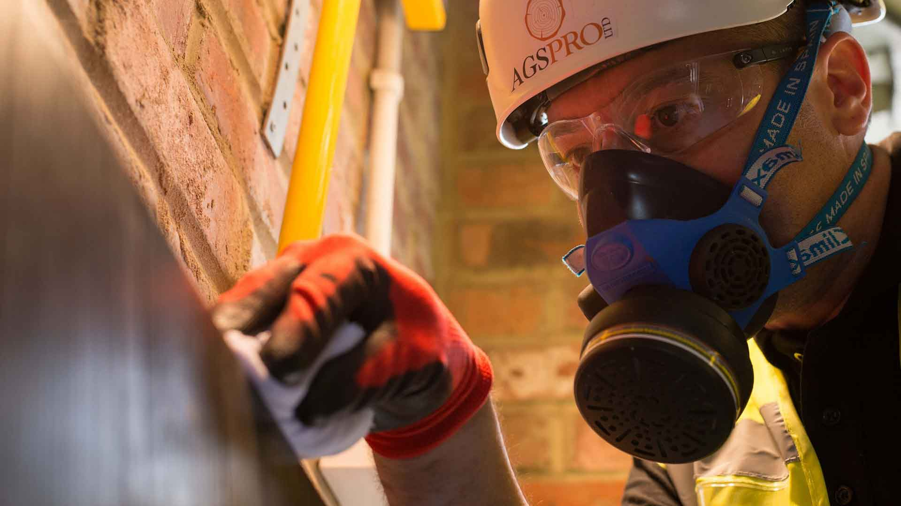

Experiență practică
Nu învățăm din problemele tale. Venim cu experiența celor întâlnite deja.
Am fost implicați în proiecte în care fiecare etapă a adus provocări tehnice, decizii importante și situații care au necesitat soluții concrete. Astăzi, folosim această experiență pentru a-i ajuta pe clienții noștri să evite greșelile costisitoare și să aleagă mai bine.



Experiență în cifre
Experiență acumulată. Perspectivă practică.
Cifrele reflectă experiența acumulată prin implicarea în proiecte de construcții și dezvoltări rezidențiale. În spatele lor se află provocări reale, decizii tehnice și soluții găsite în practică.
Valorile reprezintă experiența profesională acumulată în proiectele la care am contribuit, nu exclusiv lucrări executate de MasterPlan Consulting.
Ce înseamnă experiența pentru tine
Mai puține încercări. Decizii mai bine fundamentate.
Nu trebuie să descoperi singur fiecare problemă și să pierzi timp căutând soluții. Ai acces la experiență practică și la o perspectivă tehnică orientată spre ceea ce funcționează în realitate.
Recunoaștem problemele din timp
Experiența din proiecte ne ajută să identificăm situațiile care pot genera întârzieri, costuri suplimentare sau dificultăți în execuție.
Găsim soluția potrivită
Analizăm situația tehnică, evaluăm variantele disponibile și te ajutăm să alegi soluția potrivită cerințelor și condițiilor proiectului.
Economisești timp și resurse
În loc să cauți singur răspunsuri sau să testezi variante fără o direcție clară, beneficiezi de îndrumare tehnică și de o abordare structurată.
Ai un partener tehnic
Nu rămâi singur în fața deciziilor dificile. Ai alături un partener care înțelege provocările proiectului și te ajută să le gestionezi.
Înțelegem construcțiile în ansamblu
Privim proiectul dincolo de o singură lucrare: construcții, instalații, organizare și corelarea etapelor importante.
Ne concentrăm pe rezultate
Recomandările noastre urmăresc soluții aplicabile, o mai bună organizare și decizii tehnice care susțin obiectivele proiectului.
Experiența potrivită pentru proiectul tău
Nu pierde timp și bani căutând singur toate răspunsurile.
Fie că pregătești un proiect nou sau te confrunți deja cu provocări în execuție, MasterPlan Consulting îți oferă consultanță, soluții tehnice și suport adaptat situației tale. Hai să analizăm împreună ce se poate face mai bine.